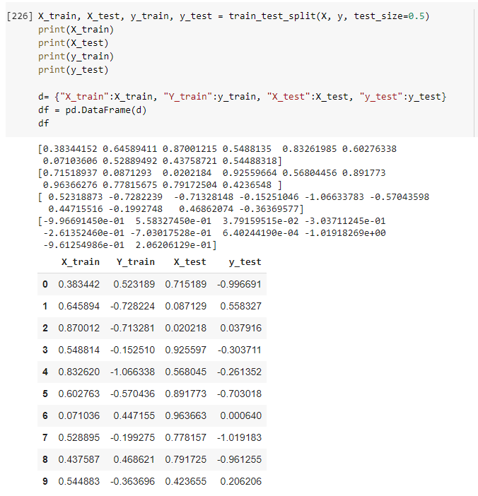
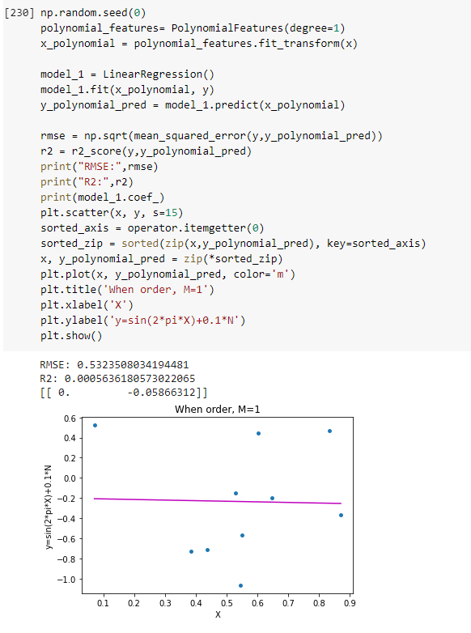
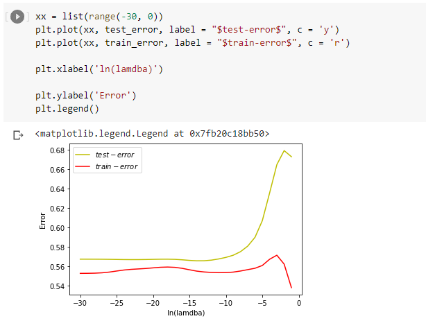

Overfitting using the Higher Order Linear Regression
Github
Introduction
This blog explains the concept of overfitting using the Higher order linear regression. First we fit the model with 10 data points and different degree values where the model is overfitted in degree 9 to overcome this we increase the data points to 100 we can see that the model is not overfitted and is accurate.
- a. Generate 20 data pairs (X, Y) using y = sin(2*pi*X) + 0.1 * N .
-
- i. Use uniform distribution between 0 and 1 for X.


- ii.Sample N from the normal gaussian distribution.

- iii. Use 10 for train and 10 for test.
- 
- b. Using root mean square error, find weights of polynomial regression for order is 0, 1, 3, 9 and Draw a chart of fit data.
- i. Polynomial Regression for Order 0
- ii.Polynomial Regression for Order 1.
- 
- iii. Polynomial Regression for Order 3.

- iv. Polynomial Regression for Order 9. We can see that the model is overfitted
- From this graph we can understand that the data is overfitted.As the graph is too accurate.
- c. Display weights in table .
- d. Draw train error vs test error
- i. Train Error.
- ii. Test Error.
- iii. Train error and Test error data.
- iv. Train error vs Test error plot.
- e. Now generate 100 more data and fit 9th order model and draw fit
- Fiiting the 9th order Model for the model with 100 data points
- Here we can see that after increasing the data points there is no overfitting observered in the graph.
- f. Now we will regularize using the sum of weights.


- g. Draw chart for lambda is 1, 1/10, 1/100, 1/1000, 1/10000, 1/100000
- i. Lambda is 1.
- ii. Lambda is 1/10.
- iii. Lambda is 1/100.
- iv. Lambda is 1/1000.

- v. Lambda is 1/10000.
- vi. Lambda is 1/10000.
- h. Now draw test and train error according to lamda .
- 
- i. Best Model based on the test Performance.
- Overfitting and Underfitting
- Overfitting occurs when a model is trained using a limited set of data points and is closely fit. Overfitting generally happens when the model is too complex, It has a small training error but a very large test error. We can see from the above image, the image with degree 9 is overfitted.
- Underfitting occurs when the model is too simple but both training and test error are large. We can see from the above image, the image with degree 0 is underfitted.
- Graphs
- We can see from the above graphs if the data was overfitted or not when we see the first order 9 graph we see that the model is too accurate that is it is overfitted whereas the degree 9 graph after increasing the data points to 120 the graph is normal and not overfitted this way the graphs helped us in determining overfitting in tha above assignment.
- Contributions
- Apart from the data referred from the reference I have updated the graphs to properly fit the data and also trained the data to get a more accurate value from it.
- Challenges
- I faced a challenge in getting the proper Train vs Test graph, I was not getting the graph as expected it was a challenge for me to get it right and also as few of the concepts were new to me it was very difficult at the start and had a lot of learning to do and also the references helped me a lot.
- References
- https://mintu07ruet.github.io/files/Miah%2001.html
- https://stackoverflow.com/questions/51906274/cannot-understand-with-sklearns-polynomialfeatures
- https://stackoverflow.com/questions/56746207/what-does-the-coef-values-in-linearregression-stand-for
- https://scikit-learn.org/stable/modules/generated/sklearn.linear_model.LinearRegression.html
- https://datascience.stackexchange.com/questions/80868/overfitting-in-linear-regression